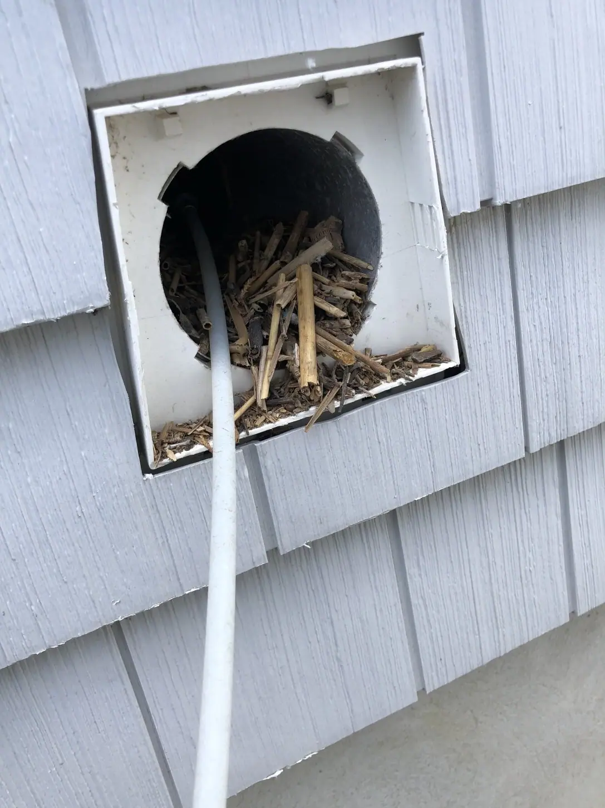
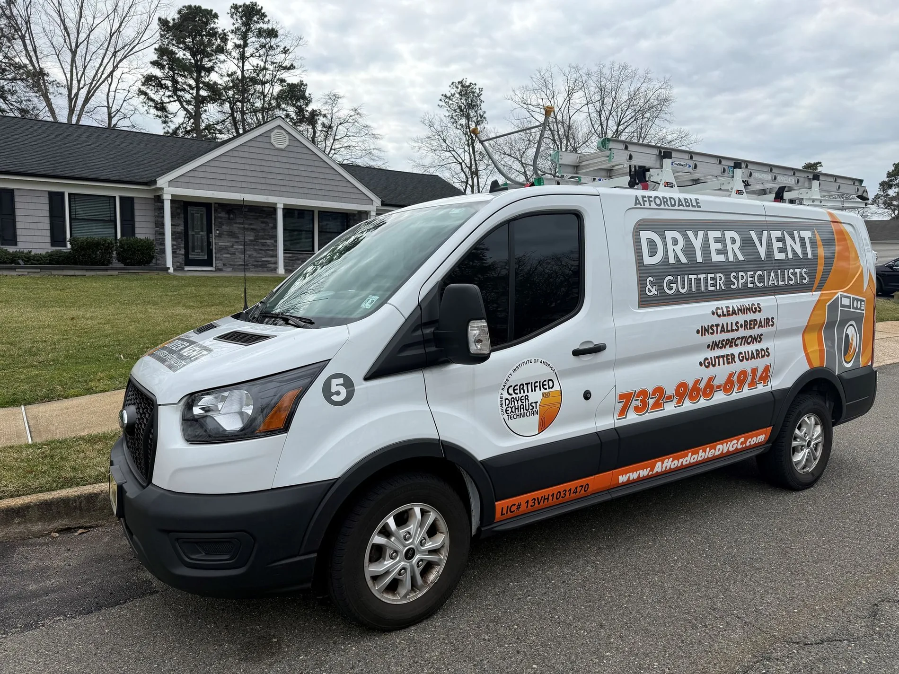
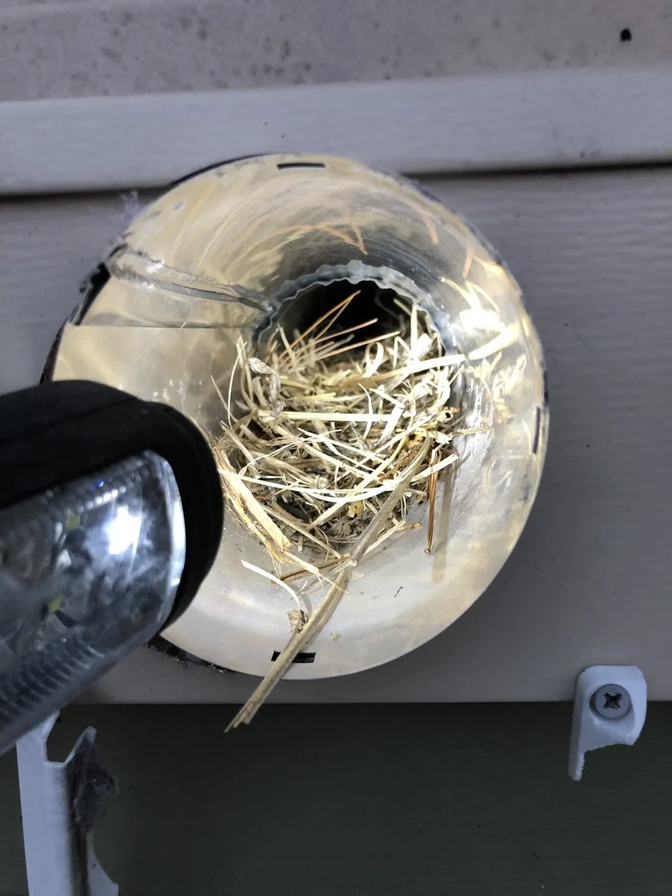
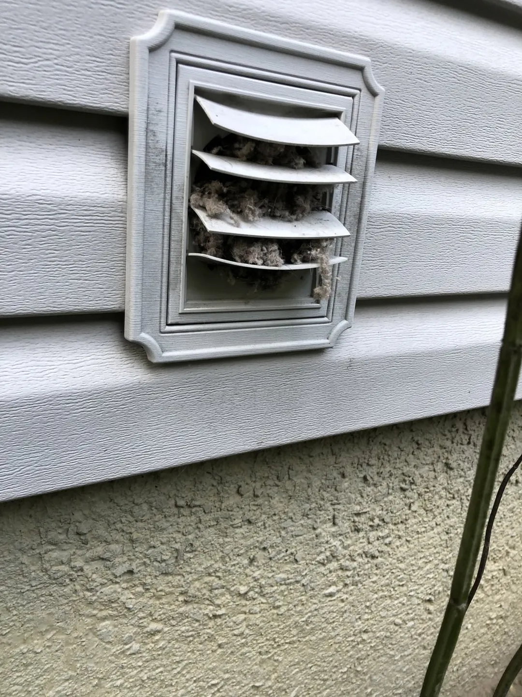
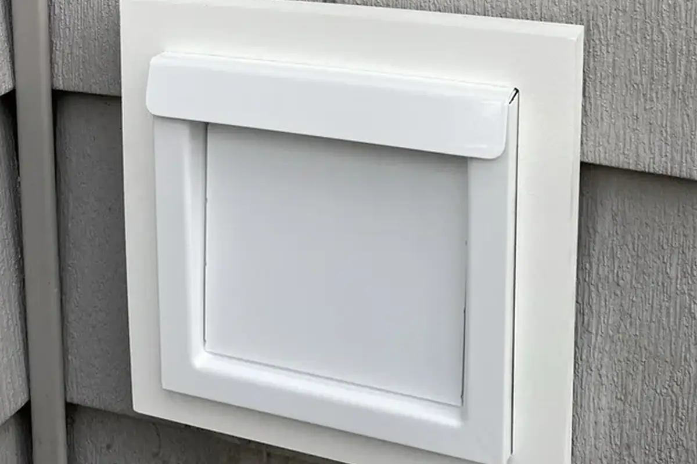
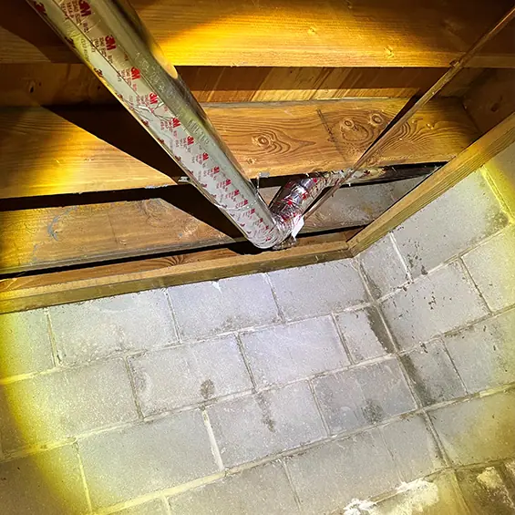
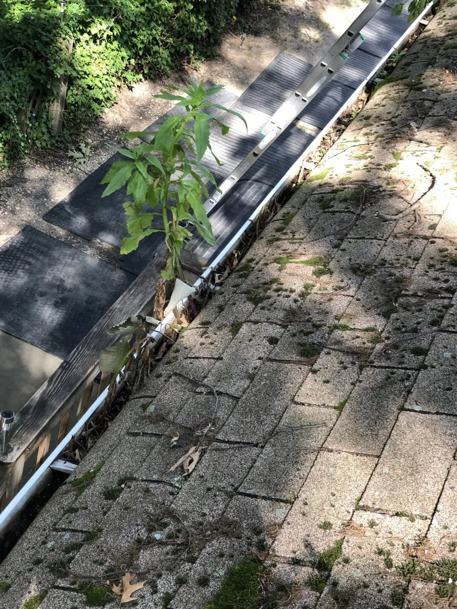
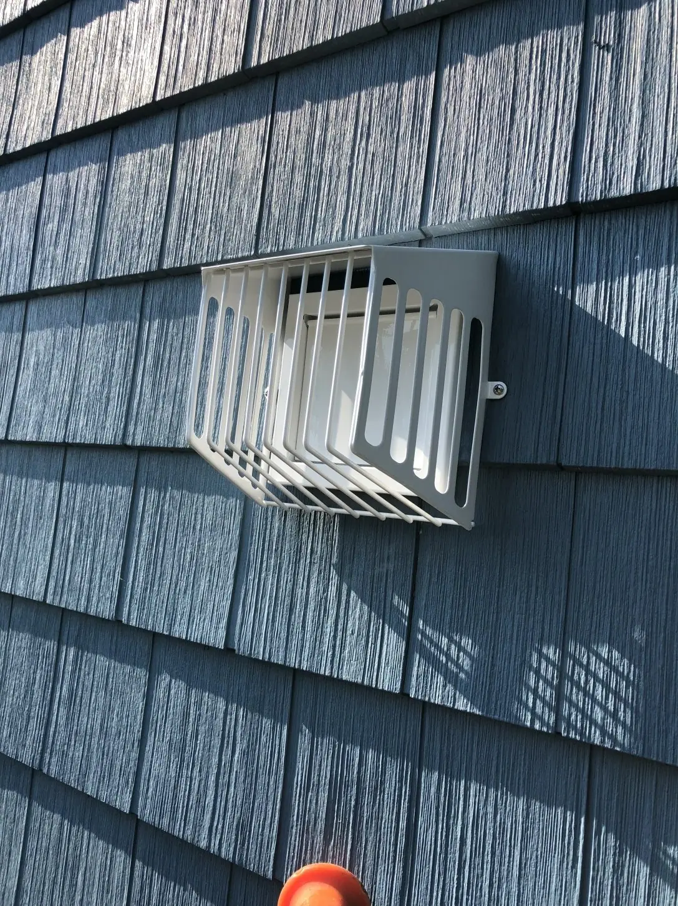
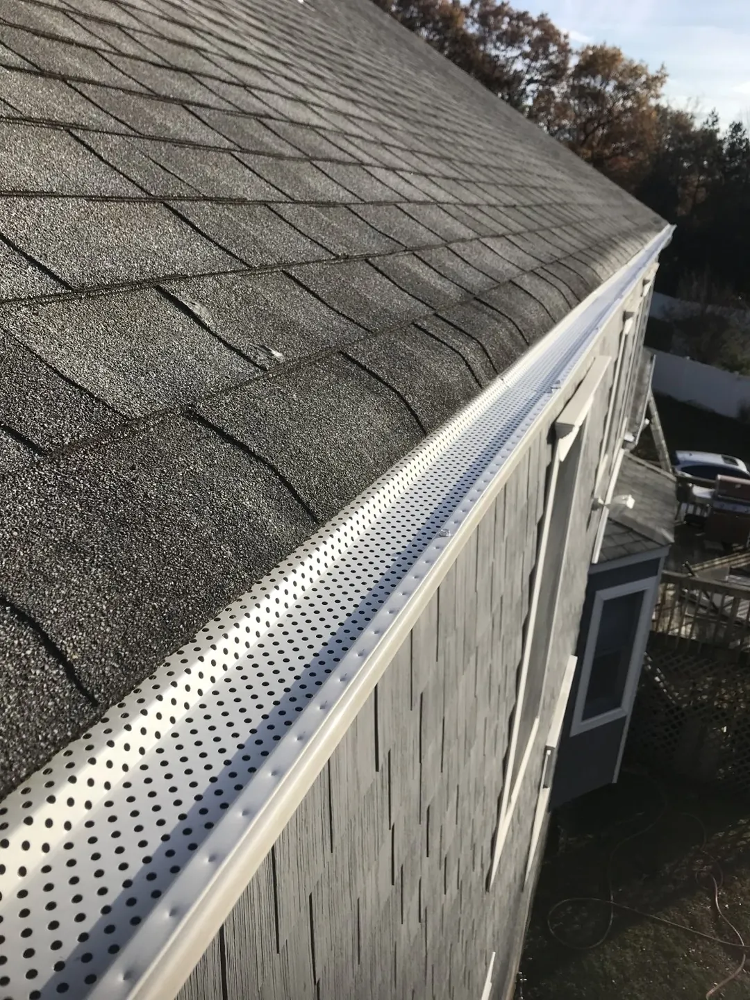
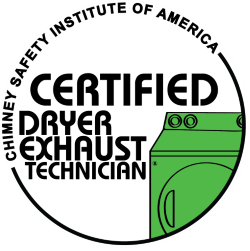

Dryer Vent Cleaning
When lint gets trapped in your ventilation system, it can cause your dryer to run inefficiently, stifle airflow, and even lead to fires. Let us keep your system clean and safe!
Explore service →
Competitive Pricing | Free Consultations and Estimates | Family-Owned & Operated
Cleanings · Installs · Re-Routes · Repairs · Inspections · Gutter Guards

If the answer is yes to even one of these, don't ignore the issue. It probably means your dryer is clogged with debris. Not only does this waste energy and cause your dryer to work harder than usual, but this can also lead to a fire.

Did you know that most dryer fires start inside the dryer? The most important part of dryer vent cleaning is disassembling and cleaning the inside of the dryer—and we’re one of the only companies in the area that includes this as part of our service. It’s called Dryer De‑Linting.
A more efficient dryer. Better-protected gutters. Professional solutions for your home.

When lint gets trapped in your ventilation system, it can cause your dryer to run inefficiently, stifle airflow, and even lead to fires. Let us keep your system clean and safe!
Explore service →
Improve the effectiveness of your dryer vent system with product upgrades like a low-profile exhaust cover or a pest- and weather-resistant hood and cage.
Explore service →
Install, re-route or replace your dryer vent with our certified dryer vent technicians. We use innovative, top quality material to help the vent last and run safely.
Explore service →
Gutter cleaning is time-consuming, labor-intensive, and if you're afraid of heights, terrifying. Luckily, you can put us on the job. We also install, repair, and sell gutter guards.
Explore service →Learn about customized vent and gutter solutions. Call us at (732) 966-6914!
Move the sliders to explore real photos from the company photo library.

Illustrative comparison — photos from different service jobs.

Illustrative comparison — photos from different properties.

Birds are always looking for a warm place to build a nest. Since dryer vents and bathroom exhaust vents are convenient for most passerine birds due to their small size and capacity to release heat, it's common to find a bird who's decided to 'move in'.
We can easily remove bird nests as well as keep them out with accessories that can be added to the vent. Contact us to learn more.
We sanitize the ductwork after removing the bird’s nest to eliminate bird mites, odors, and bacteria caused by urine and feces.
Explore dryer vent services →From homeowners right here in Ocean and Monmouth County.
Feedback from our customers
“Only good things to say here. Showed up early. Super clean work. Fixed up work that was done by others that did not know what they were doing. Polite, clean and courteous. Totally professional company.”
“Nick and AJ did a great job cleaning our gutters and the dryer vent. Nick was very thorough with the job. Nick was upfront with what needed to be done right away and what could wait. Found the prices for the job to be reasonable.”
“Excellent professionalism, customer service and efficiency. They gave good advice regarding the dryer. I will definitely use them all the time for my annual cleaning.”

Trained and certified to help keep your dryer running safely and efficiently.
Local · Family-Owned & Operated